Specimen of the graphics that require 2 input variables and that, up
to now, are being considered by the brinton’s longplot()
and brinton::plotup() functions.
2 Numeric

2num = c('scatter plot', 'bw scatter plot', 'color scatter plot')
2num = c('binned scatter plot', 'bw binned scatter plot', 'color binned scatter plot')
2num = c('binned heatmap', 'bw binned heatmap', 'color binned heatmap')
2num = c('hexagonal binned heatmap', 'bw hexagonal binned heatmap', 'color hexagonal binned heatmap')
2num = c('blank', 'bw heatmap', 'color heatmap')
2num = c('contour plot', 'bw contour plot', 'color contour plot')
2num = c('contour plot with data points', 'bw contour plot with data points', 'color contour plot with data points')
2num = c('parallel plot', 'bw parallel plot', 'color parallel plot')
2num = c('unscaled parallel plot', 'unscaled bw parallel plot', 'unscaled color parallel plot')
2num = c('path graph', 'bw path graph', 'color path graph')
2num = c('point-to-point graph', 'bw point-to-point graph', 'color point-to-point graph')
2num = c('point graph', 'bw point graph', 'color point graph')
2num = c('line graph', 'stepped line graph')
2num = c('area graph')
2num = c('stepped area graph', 'bw stepped area graph', 'color stepped area graph')
2num = c('blank', 'bw heatmap', 'color heatmap')
2num = c('blank', 'bw seq. stripe graph', 'color seq. stripe graph')
2num = c('histogram', 'bw histogram', 'color histogram')
2num = c('freq. polygon'))
2num = c('density plot', 'filled density plot')
2num = c('violin plot', 'filled violin plot')
2num = c('box plot'))
2num = c('ecdf plot', 'point ecdf plot', 'stepped ecdf plot')2 Datetime

2dtt = c('scatter plot', 'scatter plot with trend line')
2dtt = c('binned scatter plot', 'bw binned scatter plot', 'color binned scatter plot')
2dtt = c('blank', 'bw heatmap', 'color heatmap')
2dtt = c('contour plot with data points')
2dtt = c('path graph', 'bw path graph', 'color path graph')
2dtt = c('point-to-point graph', 'bw point-to-point graph', 'color point-to-point graph')2 Ordered
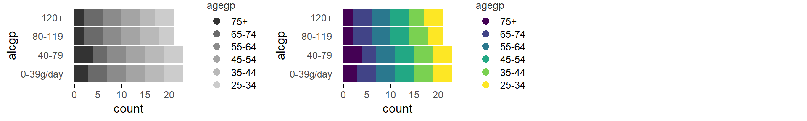
2ord = c('bw stacked bar graph', 'color stacked bar graph')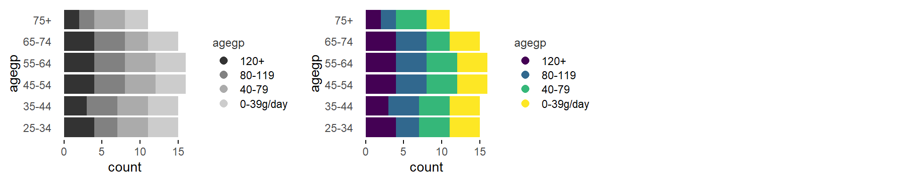
2ord = c('transposed bw stacked bar graph', 'transposed color stacked bar graph')
2ord = c('bw 100% stacked bar graph', 'color 100% stacked bar graph')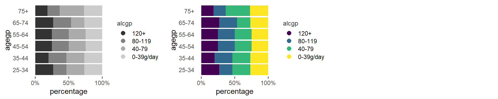
2ord = c('transposed bw 100% stacked bar graph', 'transposed color 100% stacked bar graph')
2ord = c('bw heatmap', 'color heatmap')2ord = c('blank', 'color residuals heatmap')
2ord = c('bw contribution to x2 heatmap', 'color contribution to x2 heatmap')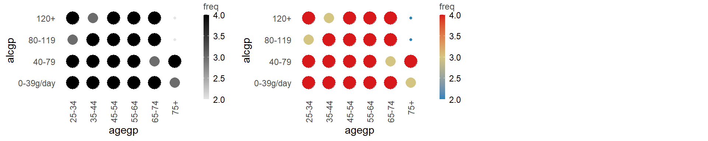
2ord = c('bw balloon plot', 'color balloon plot')
2ord = c('blank', 'color residuals balloon plot')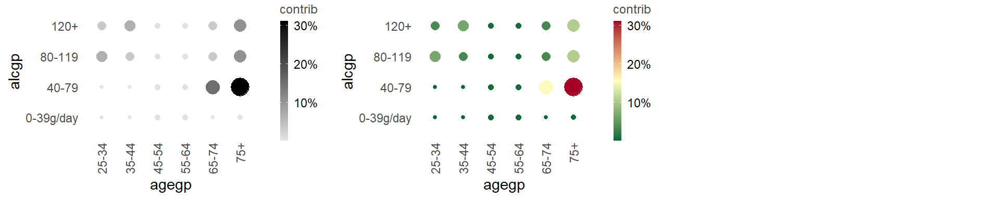
2ord = c('bw contribution to x2 balloon plot', 'color contribution to x2 balloon plot')2 Factor

2fac = c('color stacked bar graph', 'color freq. reordered stacked bar graph', 'color alphab. reordered stacked bar graph')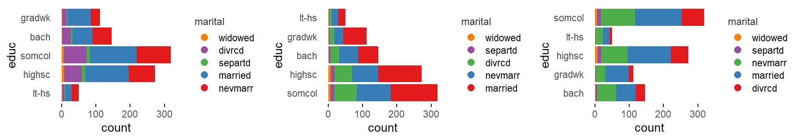
2fac = c('transposed color stacked bar graph', 'transposed color freq. reordered stacked bar graph', 'transposed color alphab. reordered stacked bar graph')
2fac = c('color 100% stacked bar graph', 'color freq. reordered 100% stacked bar graph', 'color alphab. reordered 100% stacked bar graph')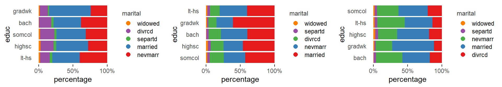
2fac = c('transposed color 100% stacked bar graph', 'transposed color freq. reordered 100% stacked bar graph', 'transposed color alphab. reordered 100% stacked bar graph')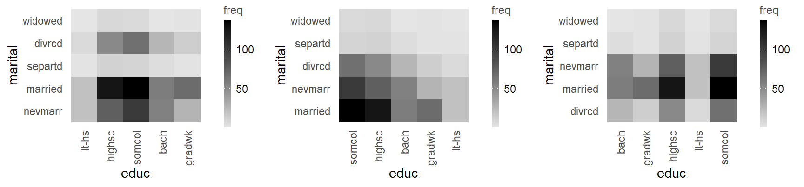
2fac = c('bw heatmap', 'bw freq. reordered heatmap', 'bw alphab. reordered heatmap')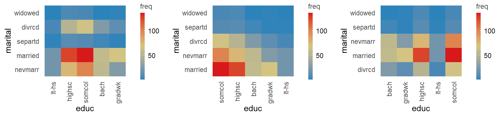
2fac = c('color heatmap', 'color freq. reordered heatmap', 'color alphab. reordered heatmap')
2fac = c('color residuals heatmap', 'color freq. reordered residuals heatmap', 'color alphab. reordered residuals heatmap')
2fac = c('bw contribution to x2 heatmap', 'bw freq. reordered contribution to x2 heatmap', 'bw alphab. reordered contribution to x2 heatmap')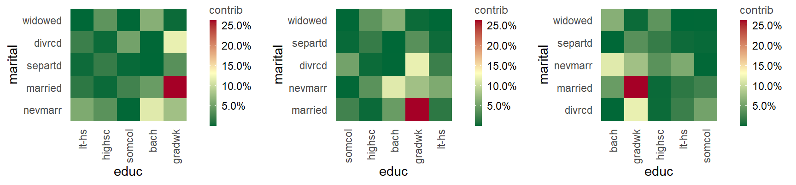
2fac = c('bw contribution to x2 heatmap', 'bw freq. reordered contribution to x2 heatmap', 'bw alphab. reordered contribution to x2 heatmap')
2fac = c('bw balloon plot', 'bw freq. reordered balloon plot', 'bw alphab. reordered balloon plot')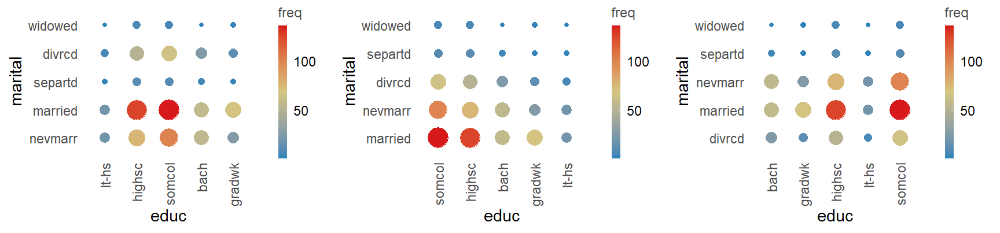
2fac = c('color balloon plot', 'color freq. reordered balloon plot', 'color alphab. reordered balloon plot')
2fac = c('color residuals balloon plot', 'color freq. reordered residuals balloon plot', 'color alphab. reordered residuals balloon plot')
2fac = c('bw contribution to x2 balloon plot', 'bw freq. reordered contribution to x2 balloon plot', 'bw alphab. reordered contribution to x2 balloon plot')
2fac = c('bw contribution to x2 balloon plot', 'bw freq. reordered contribution to x2 balloon plot', 'bw alphab. reordered contribution to x2 balloon plot')Numeric ~ Datetime

num~dtt = c('scatter plot', 'scatter plot with trend line')
num~dtt = c('binned scatter plot', 'bw binned scatter plot', 'color binned scatter plot')
num~dtt = c('blank', 'bw heatmap', 'color heatmap')
num~dtt = c('contour plot with data points')
num~dtt = c('path graph', 'bw path graph', 'color path graph')
num~dtt = c('point-to-point graph', 'bw point-to-point graph', 'color point-to-point graph')Numeric ~ Ordered

num~ord = c('path graph')
num~ord = c('point graph')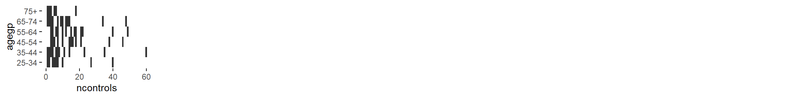
num~ord = c('tile plot')
num~ord = c('binned heatmap')
num~ord = c('bw binned heatmap')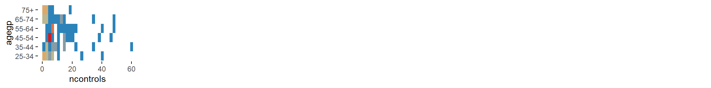
num~ord = c('color binned heatmap')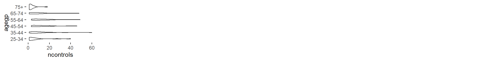
num~ord = c('violin plot')
num~ord = c('filled violin plot')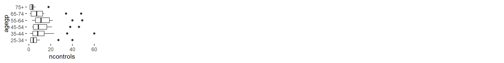
num~ord = c('box plot')num~ord = c('blank', 'bw stacked histogram', 'color stacked histogram')num~ord = c('blank', 'bw 100% stacked histogram', 'color 100% stacked histogram')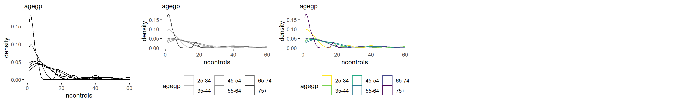
num~ord = c('density plot', 'bw density plot', 'color density plot')num~ord = c('blank', 'bw filled density plot', 'color filled density plot')Numeric ~ Factor

num~fac = c('path graph', 'freq. reordered path graph', 'alphab. reordered path graph')
num~fac = c('point graph', 'freq. reordered point graph', 'alphab. reordered point graph')
num~fac = c('tile plot', 'freq. reordered tile plot', 'alphab. reordered tile plot')
num~fac = c('binned heatmap', 'freq. reordered binned heatmap', 'alphab. reordered binned heatmap')
num~fac = c('bw binned heatmap', 'bw freq. reordered binned heatmap', 'bw alphab. reordered binned heatmap')
num~fac = c('color binned heatmap', 'color freq. reordered binned heatmap', 'color alphab. reordered binned heatmap')
num~fac = c('violin plot', 'freq. reordered violin plot', 'alphab. reordered violin plot')
num~fac = c('filled violin plot', 'freq. reordered filled violin plot', 'alphab. reordered filled violin plot')
num~fac = c('box plot', 'freq. reordered box plot', 'alphab. reordered box plot')num~fac = c('blank', 'bw stacked histogram', 'color stacked histogram')num~fac = c('blank', 'bw 100% stacked histogram', 'color 100% stacked histogram')
num~fac = c('density plot', 'blank', 'color density plot')num~fac = c('blank', 'filled density plot', 'color filled density plot')Factor ~ Ordered

fac~ord = c('color stacked bar graph', 'color freq. reordered stacked bar graph', 'color alphab. reordered stacked bar graph')
fac~ord = c('color stacked bar graph', 'color freq. reordered stacked bar graph', 'color alphab. reordered stacked bar graph')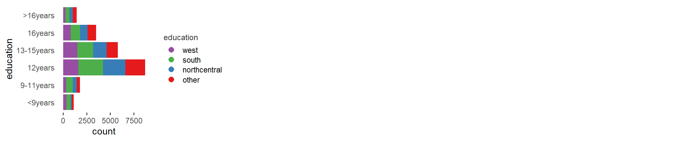
fac~ord = c('transposed color stacked bar graph')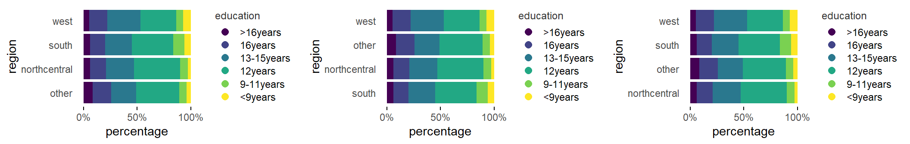
fac~ord = c('color 100% stacked bar graph', 'color freq. reordered 100% stacked bar graph', 'color alphab. reordered 100% stacked bar graph')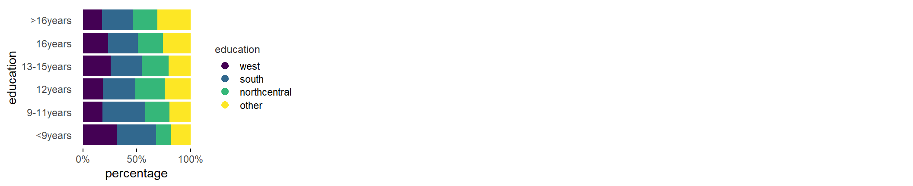
fac~ord = c('transposed color 100% stacked bar graph')
fac~ord = c('bw heatmap', 'bw freq. reordered heatmap', 'bw alphab. reordered heatmap')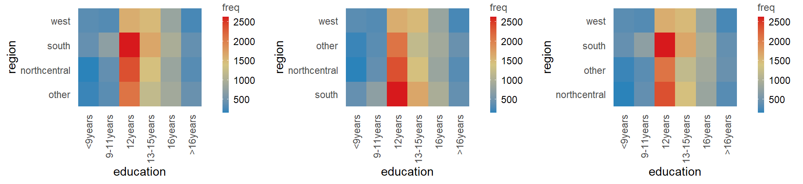
fac~ord = c('color heatmap', 'color freq. reordered heatmap', 'color alphab. reordered heatmap')
fac~ord = c('color residuals heatmap', 'color freq. reordered residuals heatmap', 'color alphab. reordered residuals heatmap')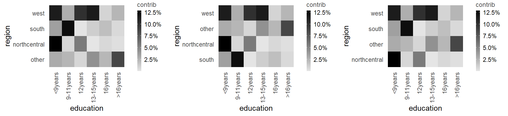
fac~ord = c('bw contribution to x2 heatmap', 'bw freq. reordered contribution to x2 heatmap', 'bw alphab. reordered contribution to x2 heatmap')
fac~ord = c('bw contribution to x2 heatmap', 'bw freq. reordered contribution to x2 heatmap', 'bw alphab. reordered contribution to x2 heatmap')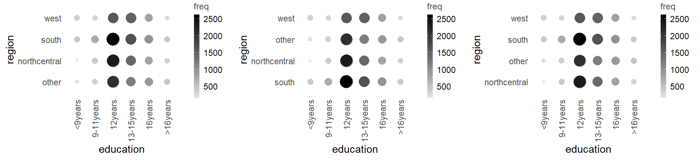
fac~ord = c('bw balloon plot', 'bw freq. reordered balloon plot', 'bw alphab. reordered balloon plot')
fac~ord = c('color balloon plot', 'color freq. reordered balloon plot', 'color alphab. reordered balloon plot')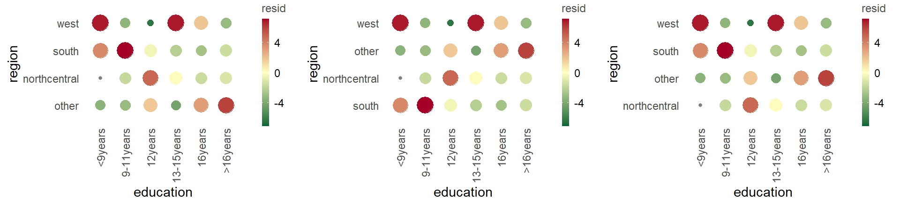
fac~ord = c('color residuals balloon plot', 'color freq. reordered residuals balloon plot', 'color alphab. reordered residuals balloon plot')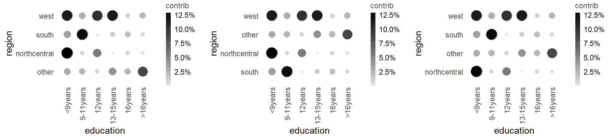
fac~ord = c('bw contribution to x2 balloon plot', 'bw freq. reordered contribution to x2 balloon plot', 'bw alphab. reordered contribution to x2 balloon plot')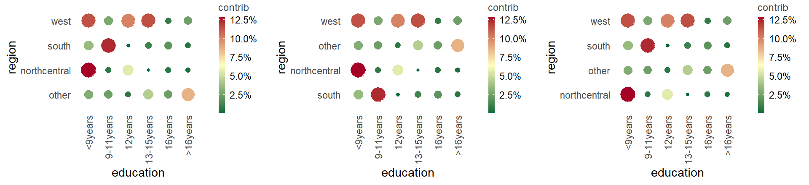
fac~ord = c('bw contribution to x2 balloon plot', 'bw freq. reordered contribution to x2 balloon plot', 'bw alphab. reordered contribution to x2 balloon plot')